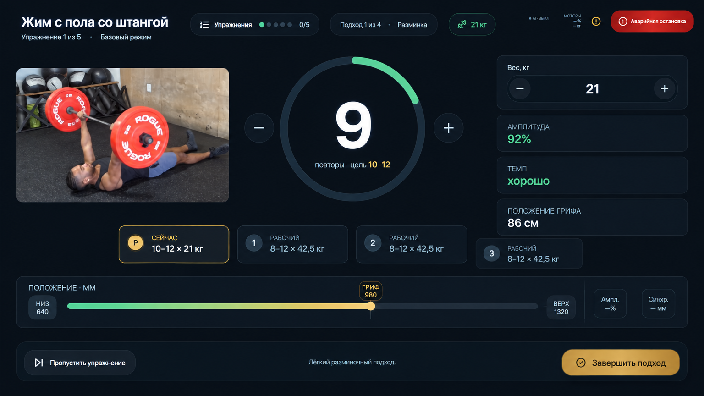
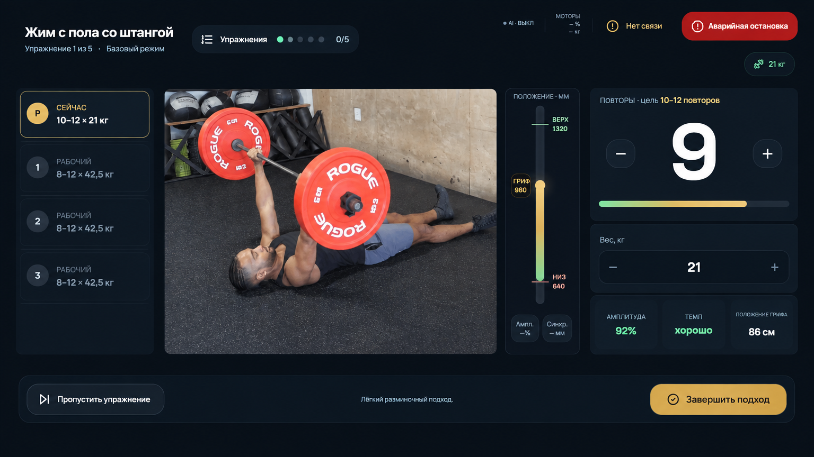
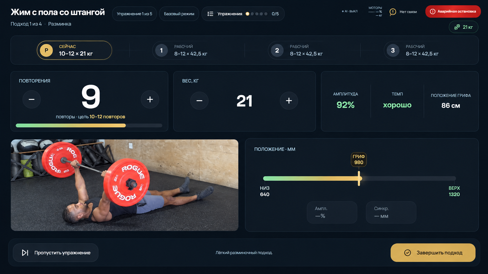
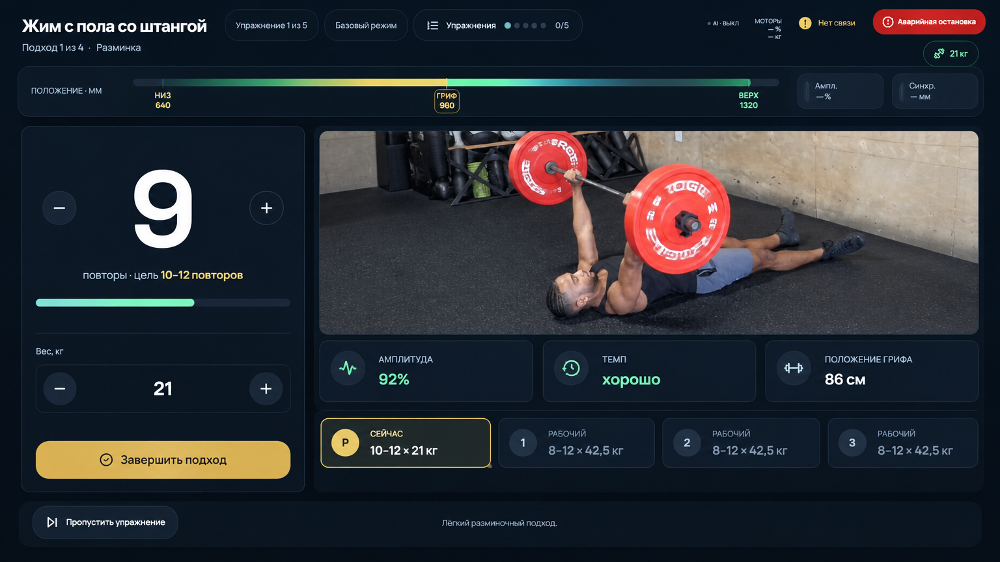
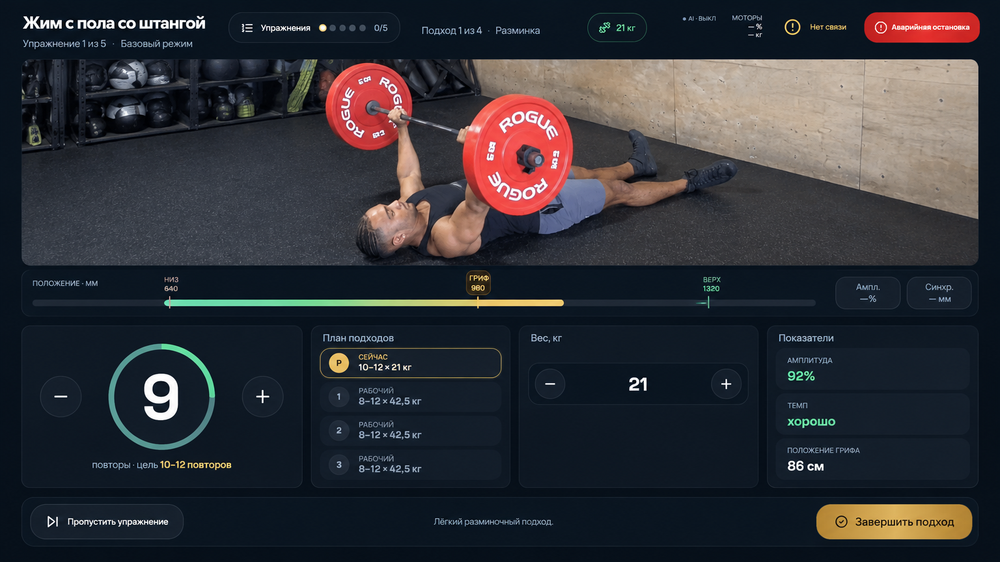
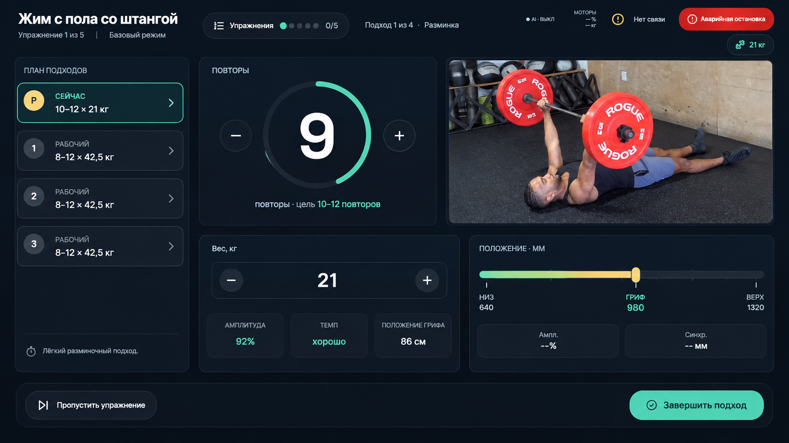
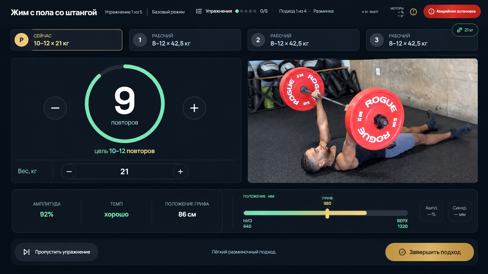
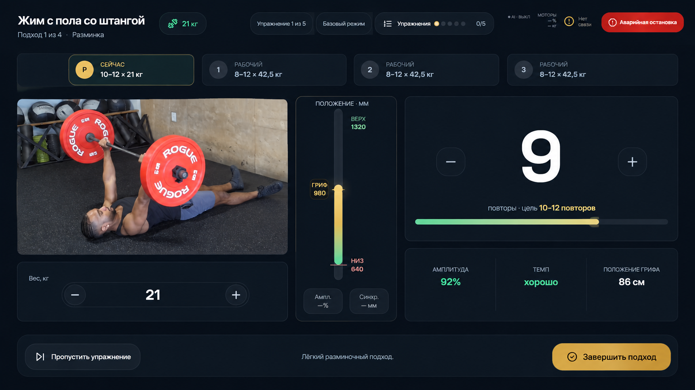
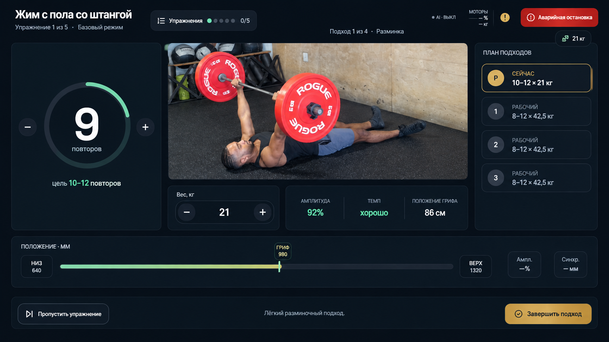
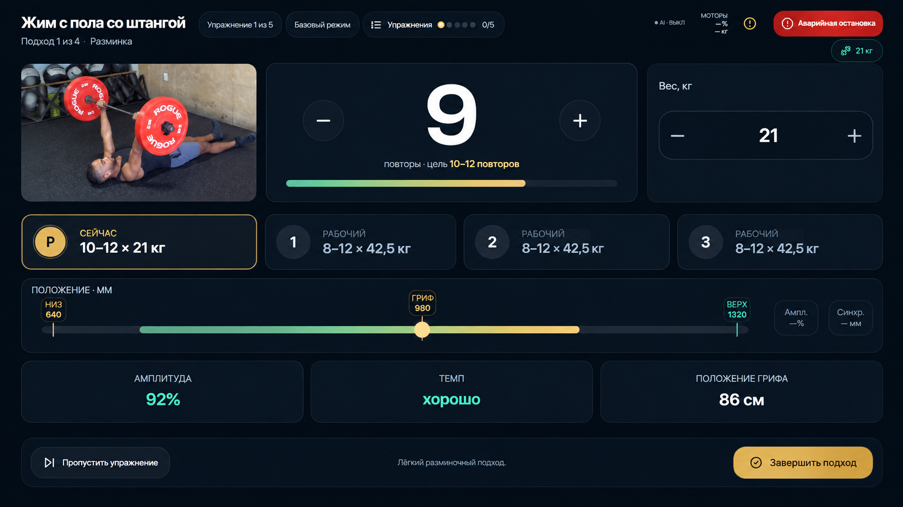

10 разных компоновок экрана тренировки
Одинаковый сценарий и близкий визуальный стиль. Сравниваются размещение, группировка, размеры и способы представления элементов. Это изображения-концепты: генератор может исказить мелкие подписи и значения, их нужно сверять с исходным интерфейсом.
01 · Центральный счётчик
Повторы в центре кольца; видео слева, вес и показатели справа. Шкала грифа горизонтально внизу.

02 · Видео в центре
Подходы вертикальным списком слева; видео в центре; счётчик, вес и показатели справа.

03 · Горизонтальные полосы
Сверху план, затем ряд счётчиков и показателей. Видео и шкала занимают нижний ряд.

04 · Управление слева
Счётчик, вес и завершение в левой колонке. Видео, показатели и подходы справа; шкала над ними.

05 · Нижняя консоль
Широкое видео сверху. Под ним шкала и консоль повторов, подходов, веса и показателей.

06 · Левая лента подходов
Постоянная колонка плана слева. Справа сетка: счётчик, видео, нагрузка и шкала.

07 · Телеметрия снизу
Повторы и вес слева, видео справа. Все показатели движения и шкала объединены в нижний пояс.

08 · Гриф как центральная ось
Вертикальная шкала разделяет видео с весом слева и счётчик с показателями справа.

09 · Асимметричная сетка
Высокая карточка повторов слева, видео в середине, подходы справа. Общая шкала внизу.

10 · Вертикальный фокус
Верхний ряд: небольшое видео, крупный счётчик, вес. Ниже последовательно подходы, шкала и показатели.
